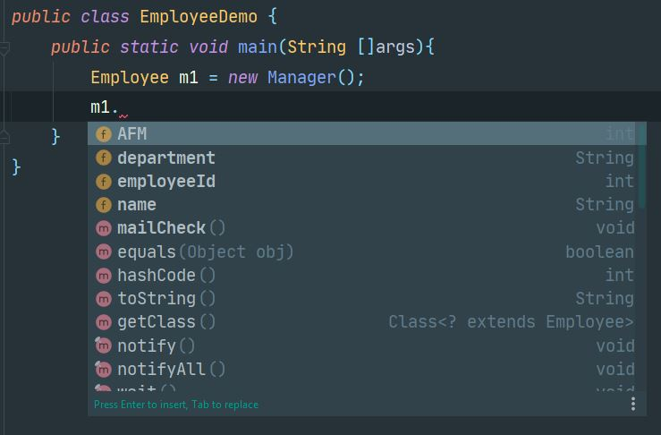
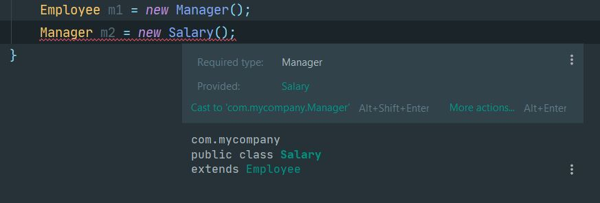
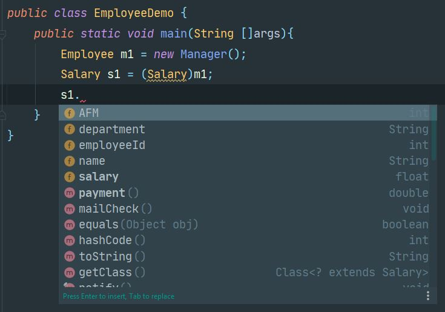

ΔΩΡΕΑΝ ΜΑΘΗΜΑΤΑ JAVA
Στο σημερινό δωρεάν μάθημα Java θα μιλήσουμε για τον πολυμορφισμό
και θα αναλύσουμε ένα απλό πρόγραμμα για την καλύτερη κατανόηση της θεωρίας.
Στην προηγούμενη ενότητα είχαμε δει την κληρονομικότητα μέσα από
ένα απλό παράδειγμα μιας εφαρμογής που υπολόγιζε τον μισθό των εργαζομένων
ανάλογα αν ήταν full-time ή απλά εξωτερικοί συνεργάτες. Για να αναλύσουμε
καλύτερα την έννοια του πολυμορφισμού, ας προσθέσουμε μια ακόμα κλάση με
το όνομα Manager η οποία και αυτή με την σειρά της θα κληρονομεί από την
Salary. Στην ουσία οι τρεις κλάσεις στις οποίες θα βασιστεί το βασικό μας
παράδειγμα στο σημερινό δωρεάν μάθημα Java είναι οι Employee, Salary και
Manager. Ας δούμε για αρχή πως είναι το καινούργιο UML διάγραμμα της
εφαρμογής μας και μετά θα τρέξουμε ένα παράδειγμα με τις τρεις κλάσεις.
Employee.java
package inheritance;
class Employee{
public String name;
public int AFM;
public String department;
public int employeeId;
public void mailCheck(){
System.out.println("Mailing a check to " + this.name);
}
}
Salary.java
package inheritance;
public class Salary extends Employee{
public float salary;
public double payment(){
return this.salary/52.0;
}
}
Manager.java
package inheritance;
public class Manager extends Salary{
public double bonus(){
return this.payment()+1000;
}
}
Ο κώδικας της Manager κλάσης είναι πολύ απλός όπως διαπιστώνετε και
εσείς. Προσθέτει 1000 ευρώ επιπλέον στην μισθοδοσία του εργαζόμενου επειδή
σαν Manager δικαιούται ένα bonus.
Ας δούμε και ένα απλό παράδειγμα εκτέλεσης αυτού του προγράμματος.
EmployeeDemo.java
package inheritance;
public class EmployeeDemo {
public static void main(String []args){
Manager m1 = new Manager();
m1.name = "Michail";
m1.department = "Development";
m1.salary = 20000;
System.out.println("Hello "+m1.name);
System.out.println("Your payment plus your bonus is: " + m1.bonus());
}
}
Output
Hello Michail
Your payment plus your bonus is: 1384.6153846153848
Πριν δούμε την έννοια του πολυμορφισμού, ας αναλύσουμε
άλλη μια φορά τι σημαίνει ακριβώς η γραμμή
Manager m1 = new Manager( );
Δεν θα πω τίποτα καινούργιο, απλά θα επαναλάβω τον δικό μου απλό
ορισμό σε περίπτωση που δεν του είχαμε δώσει αρκετή σημασία από την
ενότητα της κληρονομικότητας. Δεξιά από το ίσον είναι η εντολή να
δημιουργηθεί ένα καινούργιο αντικείμενο κάνοντας χρήση του default no-argument
constructor που μας προσφέρει η java από την στιγμή που δεν έχουμε δημιουργήσει
δικό μας constructor. Οπότε το αντικείμενο είναι ήδη δημιουργημένο στην μνήμη
απλά, επειδή έτσι σχεδιάστηκε η java εξ αρχής, δεν μας επιτρέπει άμεση πρόσβαση
σε αυτό. Για αυτό το λόγο, από τα αριστερά του ίσον, δημιουργούμε ένα reference
το οποίο θα έχει την ευθύνη να καλεί τις μεταβλητές και τις μεθόδους, που
ανήκουν στο αντικείμενο, για μας. Το σημαντικό στοιχείο είναι το data type
του reference m1. Εδώ είναι Manager που σημαίνει ότι το reference θα
συμπεριφέρεται σαν Manager - δηλαδή θα βλέπει όλες τις public
μεταβλητές και τις μεθόδους του αντικειμένου. Αν το δούμε συνολικά
λοιπόν θα μπορούμε να πούμε τον εξής απλό ορισμό: δημιουργούμε ένα
αντικείμενο είδος Manager και το reference συμπεριφέρεται σαν
Manager. Δηλαδή θα μπορούσε να είχαμε δημιουργήσει ένα αντικείμενο
είδος Manager αλλά να είχε διαφορετική συμπεριφορά? Ναι, και αυτός
είναι ο πολυμορφισμός.
Ας γυρίσουμε πίσω στην main( ) και ας δημιουργήσουμε ένα
αντικείμενο είδος Manager που να συμπεριφέρεται σαν Employee.
EmployeeDemo.java
package inheritance;
public class EmployeeDemo {
public static void main(String []args){
Employee m1 = new Manager();
}
}
Δημιουργήσαμε ένα αντικείμενο είδος Manager αλλά η συμπεριφορά
του reference είναι ίδια με ενός Employee αντικειμένου. Αυτό μπορούμε
να το επιβεβαιώσουμε ένα γράψουμε m1 και τελεία. Η λίστα με τις μεθόδους
και τις μεταβλητές που θα εμφανιστεί είναι εκείνη της κλάσης Employee.

Με αυτό τον τρόπο έχουμε τον έλεγχο πότε ένα αντικείμενο μπορεί να
αποκτήσει ολοκληρωμένη πρόσβαση σε όλες τις μεθόδους και τις public
μεταβλητές μιας κλάσης. Αυτή την στιγμή δεν θέλουμε το αντικείμενο να έχει
δυνατότητες πέραν από εκείνες ενός αντικειμένου Employee. Το αντικείμενο
Manager που δημιουργήσαμε, υφίσταται και υπάρχει στην μνήμη, απλά
φιλτράρουμε το τι ακριβώς βλέπουμε.
Πριν προχωρήσουμε στην θεωρία του πολυμορφισμού (polymorphism) πρέπει
να αναφέρουμε ότι δεν υφίσταται πολυμορφισμός εάν δεν υπάρχει
κληρονομικότητα. Πρέπει να υπάρχει κληρονομικότητα μεταξύ δύο ή
περισσοτέρων κλάσεων για να μπορέσουμε να παίξουμε με τον πολυμορφισμό.
Επίσης θα πρέπει να γίνει κατανοητό ότι μπορούμε να δώσουμε
οποιαδήποτε συμπεριφορά στο αντικείμενο από την κλάση που δημιουργήθηκε και
πάνω, όχι πιο κάτω από την κλάση που δημιουργήθηκε. Δηλαδή αν είχαμε δημιουργήσει
ένα αντικείμενο είδος Salary θα μπορούσαμε στο reference να δώσουμε την
συμπεριφορά του Employee αλλά όχι εκείνη του Manager.

Οπότε αν δημιουργήσουμε ένα αντικείμενο είδος Manager θα μπορούσαμε να
του δώσουμε την συμπεριφορά του Employee, Salary ή Manager ενώ εάν
δημιουργήσουμε ένα αντικείμενο είδος Salary τότε μπορούμε να του δώσουμε
μόνο την συμπεριφορά του Employee ή εκείνη του Salary.
Αν έχουμε δώσει την συμπεριφορά του Employee στο αντικείμενο
μας, πως μπορούμε να του αλλάξουμε την συμπεριφορά δίνοντας του ιδιότητες
Salary ή ακόμα και Manager? Η απάντηση είναι απλή – χρησιμοποιώντας
casting. Ας δούμε πως μπορούμε να αλλάξουμε τις δυνατότητες του
αντικειμένου δίνοντας του ικανότητες Salary.
EmployeeDemo.java
package inheritance;
public class EmployeeDemo {
public static void main(String []args){
Employee m1 = new Manager();
Salary s1 = (Salary)m1;
}
}
Η συμπεριφορά του s1 είναι ίδια με εκείνη ενός Salary
αντικειμένου. Θα δούμε ότι εμφανίζονται τώρα τόσο η μεταβλητή salary
όσο και η μέθοδο payment( ). Φυσικά για να κρατήσουμε μόνιμα αυτή την
μετατροπή, αναθέτουμε την καινούργια συμπεριφορά σε μια μεταβλητή s1 είδος Salary.

Με την ίδια λογική, μπορούμε να κάνουμε το s1 ή το m1 να
συμπεριφέρεται σαν Manager. Τότε θα έχουμε αποκτήσει και απόλυτη
πρόσβαση σε όλες τις ιδιότητες και μεταβλητές της κλάσης Manager. Επειδή
η κλάση Manager κληρονομεί από την Salary και εκείνη με την σειρά της από
την Employee, τότε ένα αντικείμενο Manager έχει πρόσβαση σε όλες τις
μεθόδους και μεταβλητές και των τριών κλάσεων.
EmployeeDemo.java
package inheritance;
public class EmployeeDemo {
public static void main(String []args){
Employee m1 = new Manager();
Manager m2 = (Manager)m1;
m1 = null;
m2.salary=20000;
System.out.println("Your salary+bonus is: " + m2.bonus());
}
}
Output
Your salary+bonus is: 1384.6153846153848
Εδώ μετατρέπουμε το m1 πίσω στην κλάση από την οποία δημιουργήθηκε
αρχικά δίνοντας του πρόσβαση ξανά σε όλες τις μεθόδους και μεταβλητές
της κλάσης Manager. Καλό θα ήταν να μην έχετε πολλά reference, που να
αναφέρονται στο ίδιο αντικείμενο, διαθέσιμα στο πρόγραμμα σας. Γιατί
πολύ απλά, αλλάζοντας κάτι από το ένα reference θα επηρεάσει το άλλο
αφού αναφέρονται στο ίδιο αντικείμενο. Οπότε ο πιο σωστός τρόπος είναι
να αναθέτετε null στο πρώτο reference. Με αυτό τον τρόπο το reference
παύει να δείχνει σε κάποιο αντικείμενο.
Σε όλη αυτή την διαδικασία που μόλις περιγράψαμε υπάρχει ένα
πρόβλημα – δεν έχουμε κάποιο προγραμματιστικό τρόπο να γνωρίζουμε
από πια κλάση γεννήθηκε εξ αρχής το αντικείμενο. Πολλές φορές δεν
είμαστε εμείς που δημιουργούμε αντικείμενα μέσα σε μια μεγάλη
εφαρμογή. Απλά τα δεχόμαστε από κάποιο service ή άλλη διαδικασία. Οπότε
δεν θα είμαστε εμείς εκείνοι που έχουν καλέσει τον constructor. Σκεφτείτε
λοιπόν ένα δέντρο κληρονομικότητας που περιέχει 10 κλάσεις. Και το
αντικείμενο έχει γεννηθεί από την 5 κλάση. Πως εμείς θα το γνωρίζουμε
αυτό? Αν προσπαθήσετε να μετατρέψετε το αντικείμενο σε κάτι αντίστοιχο
της κλάσης 6 θα λάβετε λάθος γιατί δεν γεννήθηκε από εκεί, ενώ αν το
μετατρέψετε σε εκείνο της κλάσης 4 δεν θα γνωρίζετε αν έχετε όλες τις
δυνατότητες γιατί απλά δεν μπορείτε να επιβεβαιώσετε ότι δημιουργήθηκε
από εκεί. Η λύση λοιπόν σε όλη αυτή την διαδικασία είναι ένας απλός
operator που ονομάζεται instanceof. Ο instanceof operator
απλά ελέγχει από ποια κλάση αρχικά δημιουργήθηκε το αντικείμενο. Ο τρόπος
που το εφαρμόζουμε μέσα στον κώδικα μας είναι απλά με ένα if-else
έλεγχο. Ας δούμε ένα απλό παράδειγμα.
EmployeeDemo.java
package inheritance;
public class EmployeeDemo {
public static void main(String []args){
Employee m1 = new Manager();
if (m1 instanceof Manager){
System.out.println("Casting to a Manager reference");
Manager m = (Manager)m1;
m.salary=20000;
System.out.println("Your payment is: " + m.bonus());
}else
if(m1 instanceof Salary){
System.out.println("Casting to a Salary reference");
Salary s1 = (Salary)m1;
s1.salary=20000;
System.out.println("Your payment is: " + s1.payment());
}
}
}
Output
Casting to a Manager reference
Your payment is: 1384.6153846153848
Ο βασικός κανόνας σε αυτή την διαδικασία είναι να ξεκινήσουμε
από την πιο χαμηλή στην κληρονομικότητα κλάση και να αναβαίνουμε
μια-μια κλάση μέχρι να φτάσουμε στην αρχική. Αν είχαμε βάλει τις
κλάσεις μας ανάποδα στον κώδικα της EmployeeDemo, τότε θα γινόταν
μετατροπή σε αντικείμενο είδος Salary αφού ένα αντικείμενο Manager
είναι και Salary.
Πίσω στις δωρεάν ενότητες Java Programming

Michail Kassapoglou Admin
Γεια σας, είμαι ο Μιχάλης Κασάπογλου και θα σας διδάξω με τον ποιο απλό
τρόπο να προγραμματίζετε σε Java. Ασχολούμαι με την τεχνική εκπαίδευση
σε διάφορες πλατφόρμες, λειτουργικά συστήματα και γλώσσες προγραμματισμού
πάνω από 20 έτη. Κατέχω έναν αρκετά μεγάλο αριθμό πιστοποιήσεων
και σαν Τraining Lead στην Intrasoft έχω την δυνατότητα να αναβαθμίζω
συνεχώς
τις γνώσεις μου και να έχω άμεση επαφή με αληθινά projects και
εξειδικευμένες
μεθόδους
ανάπτυξης εφαρμογών που έχουν υψηλές απαιτήσεις.
Για τυχόν ερωτήσεις σας μπορείτε να επικοινωνήσετε μαζί μου
στο Michail.Kassapoglou@gmail.com
Σας ευχαριστώ που επισκεφτήκατε τα δωρεάν μαθήματα προγραμματισμού JAVA.